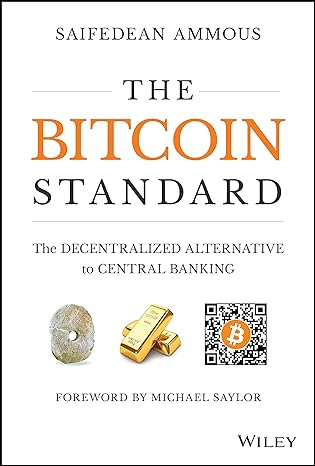
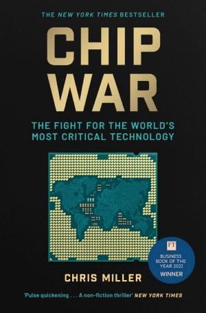

2.2 — Metaverso e Criptovalute
2.2.1 — Il metaverso trasformato
→ Apri come pagina indipendente — bibliografia + nav dedicata
Mark Zuckerberg ha scommesso il futuro di Facebook su una parola: metaverso. Ha cambiato il nome dell'azienda in Meta, investito 13,7 miliardi di dollari nel 2022 e perso il 70% del valore azionario in un anno. I critici hanno dichiarato il metaverso morto. Avevano torto — ma anche Zuckerberg, in parte. Il metaverso non è morto: si è trasformato. Non è un visore da indossare in soggiorno, ma un tessuto digitale che avvolge progressivamente ogni interazione economica e sociale (🏙 ff.3.1 Cosa sei realmente, Meta? (parte 1)). La tecnologia di fondo avanza: display VR da 3 millimetri che creano ologrammi tramite AI[1] aprono un'esperienza di realtà mista senza visori ingombranti. Fortnite, Roblox e le piattaforme social mostrano che la dimensione metaverso non è solo hardware: è già comportamento quotidiano, attenzione condivisa e identità digitale. Viviamo già nel metaverso: non come avatar con visore, ma come profili con notifiche (2️⃣ ff.10.2 Siamo già nel metaverso?).
Ma se il metaverso è un tessuto di interazioni più che un luogo, presto a tesserlo non saremo più noi. Un paper arxiv recente[34] rovescia l’intuizione comune sui modelli AI: piccoli aumenti di accuratezza producono enormi aumenti nel numero di task completabili. Il motivo è matematico — per un task a N passi, la probabilità di successo è pN — ma la conseguenza è politica. Passare da 90% a 95% di accuratezza per singolo passo significa saltare dal 35% al 60% di successo su un task a 10 passi: quasi il doppio, per un margine che sul benchmark singolo sembra rumore statistico. I modelli thinking si auto-correggono senza bloccarsi sugli errori: l’errore non è più un muro, è un rallentatore. Ecco perché l’asimmetria fra GPT-4 e GPT-5 Pro non si percepisce nei benchmark umani ma si sente brutalmente nei workflow agentici. La curva dell’accuratezza non è lineare: è una cascata di probabilità, e nel metaverso della prossima decade la cascata scorre a vantaggio di chi costruisce gli agenti migliori, non di chi fabbrica i visori più sottili (💻 ff.48.3 AI tutto fare).
E se gli agenti abitano il metaverso, la geografia fisica viene risucchiata dentro insieme a loro. Meta Reality Labs ha lanciato Hyperscapes[22][33]: 5 minuti di camminata con il visore Quest e il tuo salotto diventa un modello 3D navigabile in VR, tutto grazie al Gaussian Splatting. Cinque minuti — non un laser scanner industriale, non un team di fotogrammetria, una camminata consumer. La scansione spaziale diventa banale, quindi inevitabilmente ubiqua. Il concetto stesso di “luogo” si biforca: lo spazio fisico resta, ma il suo gemello digitale si moltiplica in mille istanze navigabili, editabili, vendibili. Il metaverso come lo immaginava Zuckerberg era un ambiente nuovo da costruire; la versione più interessante, invece, è che stiamo digitalizzando quello esistente. La realtà fisica è solo la prima bozza — e ora ogni bozza può averne infinite revisioni (📸 ff.85.3 Nuova vita al nostro passato).
E mentre i salotti entrano in VR, il web già ci è dentro — ma non più per gli umani. Secondo Cloudflare[32], nel 2025 il traffico crawler è cresciuto del 18% in un anno, con GPTBot a +305% e Googlebot a +96%. I bot AI scannerizzano il web a velocità triple rispetto a Google: cambia il committente, cambia il ritmo, cambia il contratto implicito. Il 14% dei top domini usa ormai robots.txt per bloccare i crawler AI, e un nuovo muro si alza tra contenuto aperto e contenuto protetto. L’asimmetria è brutale — chi scrive paga per produrre, chi scrappa estrae gratis e rivende come training data. Il web come bene comune funzionava perché il crawler era uno e sapevamo perché; oggi i crawler sono dozzine e ognuno persegue un training run da miliardi. Il prossimo contenuto interessante sarà dietro paywall o login: l’open web come lo conoscevamo si sta comprimendo, schiacciato fra chi produce e chi fagocita (🌐 ff.95.1 La sovranità dei network).
Ma cosa ha spinto davvero Zuckerberg a scommettere su Meta? In una conversazione con Gary Vaynerchuk, il fondatore di Facebook racconta il percorso: Meta non è solo social, è il tentativo di costruire tecnologie per creare contatti e relazioni migliori — un lavoro iniziato sette anni prima con l’acquisizione di Oculus. La comunicazione digitale è passata dagli SMS alle immagini (dopo l’inclusione delle fotocamere nei cellulari), poi ai video. Ma non è il punto finale: gli ologrammi, dice Zuckerberg, potrebbero essere il prossimo step — scherma contro la campionessa del mondo, proiettata alla Obi-Wan Kenobi. C’è però una distinzione cruciale: la realtà aumentata è diversa da quella virtuale. Quella virtuale funziona già con Oculus Quest; quella aumentata richiede ancora tanta ingegneria, soprattutto sulle dimensioni dei dispositivi. Meta investe 10 miliardi di dollari all’anno per questi dispositivi. E il web3? Zuckerberg vede negli NFT un elemento importante del metaverso: ogni utente sarà una realtà unica, con i suoi oggetti digitali e collegamenti cross-platform, non più scompartimentati in app isolate (👽 ff.3.2 Cosa sei realmente, Meta? (parte 2)).
Prima ancora che il metaverso assumesse contorni definiti, una piattaforma nata per i videogiocatori ne anticipava la grammatica sociale. Discord nacque come server vocale per il gaming — zero latenza, zero voci robotiche — e si è mangiato la finanza, l’apprendimento e le criptovalute nel giro di tre anni. La possibilità di condividere musica, video e persino guardare un film insieme — unita a canali accessibili solo su invito — ha trasformato Discord in un laboratorio di comunità digitali selettive: i gruppi NFT più esclusivi costruiscono la propria identità attorno a salotti digitali con prerequisiti verificati, esattamente come chi vende al dettaglio su Roblox scopre che il negozio virtuale può generare più traffico di quello fisico[21]. La monetizzazione per utente resta tra le più basse del panorama social, ma la crescita è stata impressionante — e il modello anticipa un metaverso che non si indossa, si abita (👾 ff.3.5 Discord).
Cloud, Internet of Things, 5G, QR code, realtà aumentata integrata in quella “vera”: schermi, Oculus e il Vision Pro di Apple sono i nostri portali verso un mondo parallelo. La diagnosi di Byung-Chul Han in Le non cose[18] è netta: abbiamo smesso di vivere il reale. L’urbanizzazione ci ha tolto verde e animali; la digitalizzazione ha sostituito cemento e asfalto con mappe mentali sempre più immateriali. Baudrillard lo scriveva già nel 1981 in Simulacri e simulazioni: la società ha sostituito a tal punto la realtà delle cose con simboli e segni che l’esperienza umana stessa è divenuta una simulazione del reale. Un albero diventa sorgente di frutta, poi raccolta di legna, infine soggetto per una foto su Instagram — ogni passaggio lo allontana dalla cosa in sé. Materia e madre sono legate etimologicamente[19]: non è un caso che Boccioni, pioniere del futurismo e della smaterializzazione delle figure, scelga sua madre sul terrazzo nell’opera intitolata — manco a dirlo — Materia[20]. La materia è stata sostituita dal Matrix: la smaterializzazione è il prezzo silenzioso della connessione perpetua — lo stesso processo che spinge la società a chiudersi nel metaverso (💻 ff.64.4 Matrix e materia).
Ma fra l’altro, non siamo già, un po’, dentro il metaverso? I dati recenti indicano che trascorriamo circa un quarto della giornata allo smartphone — un’ora in più rispetto al 2019. Se a questo si aggiunge il tempo davanti a ogni altro schermo, la risposta appare piuttosto evidente. Lo statunitense medio ha passato 4,2 ore al giorno sul cellulare nel 2021, con un incremento del trenta per cento in due anni. Il settanta per cento di quel tempo è stato assorbito da app social e video. Il metaverso non è un luogo da raggiungere: è una condizione in cui siamo già immersi, senza rendercene conto (2️⃣ ff.10.2 Siamo già nel metaverso?).
Eppure il metaverso non è un monolite: è un continuum. Da un lato c’è la realtà virtuale totalizzante — il visore che ti chiude dentro, il mondo sostitutivo, l’isolamento volontario. Un giornalista del Wall Street Journal ha trascorso un’intera giornata lavorativa nel metaverso VR: riunioni, pause caffè, pranzo, tutto dentro il visore, e ne è uscito con la nausea e una domanda scomoda sulla direzione del lavoro da remoto. Dall’altro lato c’è la realtà aumentata — non un mondo alternativo, ma una pellicola digitale sovrapposta al reale. Vetrine che proiettano effetti su chi passa. Monumenti ricostruiti che appaiono dove un tempo sorgevano. I ciliegi di Tokyo che fioriscono a gennaio, a Berlino, attraverso gli occhiali giusti. Con visori VR che sfiorano i diecimila dollari, il metaverso totale resta un lusso da early adopter; la realtà aumentata, invece, si insinua già nei telefoni che abbiamo in tasca. La vera partita non è immersione contro realtà: è quanto del digitale accetti di lasciare entrare nel fisico (1️⃣ ff.10.1 Vivremo in un’altra realtà?). McKinsey calcola che metà del PIL mondiale 2010-2020 è stato generato in 3.600 regioni — l’1% del pianeta[2]. Le città potrebbero contenere il cambiamento climatico: meno spostamenti, case più piccole, servizi concentrati. Ma la centralizzazione porta monopoli: aziende che de-tronizzano presidenti, controllano l’accesso a notizie e servizi essenziali. ASML è l’unico produttore al mondo delle macchine litografiche necessarie per i chip avanzati[3]: un single point of failure per la legge di Moore. ChatGPT per sessualità, Replika per supporto psicologico: la centralizzazione digitale produce servizi migliori a costi minori, ma il prezzo è il controllo (🏙️ ff.52.2 Centralizzare conviene).
Ma il metaverso non è solo un luogo da visitare: è un luogo da costruire, e l’AI generativa ne sta abbattendo la soglia di ingresso. Ammaar, con un’IA di testo-oggetto 3D, ha ricreato la DeLorean di Ritorno al Futuro e l’ha piazzata in salotto. Come mappe, macchine fotografiche e sveglie sono state spazzate via da iPhone, arredamento, finestre e piante potrebbero seguire lo stesso destino — smaterializzandosi in oggetti virtuali. L’intreccio tra IA generativa e VR spiega la recente assunzione da parte di MidJourney dell’ingegnere dietro al Vision Pro. Creare oggetti 3D è tanto facile che la pasta al forno della domenica può diventare un modello tridimensionale da condividere. La convergenza tra AI generativa e realtà virtuale è il punto in cui il metaverso smette di essere un visore e diventa un verbo: generare realtà, non solo entrarci (✳️ ff.85.2 Convergenza generativa).
E c’è chi si chiede se i World Models servano davvero, o se bastino i LLM. Non sono forse già gli LLM in grado di avere una visione del mondo 3D, magari sognandola? Una prova citata: GPT-5.4 ricrea in due prompt l’appartamento di Monica di Friends — la pianta, il divano arancione, la porta viola. Non è solo un esercizio di memoria: il modello ha costruito un ambiente navigabile partendo da un pattern di frammenti visivi mai forniti come mappa. Se un LLM può tenere dentro un appartamento intero solo da riferimenti narrativi sparsi, la domanda di architettura (🌎 ff.148.3 Un mondo là fuori?) si complica: forse il mondo dentro di noi è già dentro il modello, e basta saperlo estrarre. La convergenza generativa (✳️ ff.85.2 Convergenza generativa) non è più solo creativa: è spaziale (💭 ff.148.4 Tutto il mondo dentro).
Prima ancora che il metaverso cambiasse pelle, Facebook aveva messo la propria maschera. Nell’ottobre 2021 l’azienda si era rinominata in Meta, annunciando di voler guidare lo sviluppo di un mondo parallelo fatto di realtà aumentata integrata con quella reale, web3 per la proprietà digitale, unificazione dei profili. Quattro pilastri dichiarati, uno non detto: la finitudine — la necessità di contare qualcosa in un mondo digitale altrimenti infinito e quindi privo di valore. Per anni, sotto la maschera di Meta ci sono stati soprattutto gli improbabili messaggi di buongiorno della zia preferita. Oggi la pelle è cambiata: Quest 3 a 550€, ologrammi via Stanford, Hyperscapes che mappano un salotto in cinque minuti. La scommessa del rebrand non era sul prodotto: era sulla categoria, e la categoria ha sopravvissuto al fallimento dei prodotti (🏙️ ff.3.1 Cosa sei realmente, Meta? (parte 1)).
E il paradosso è che chi si è ribattezzato metaverso (Meta) non è il protagonista più vicino al metaverso come concetto sociale. C’è chi sostiene che Discord sia più metaverso di Meta: una piattaforma di canali vocali, server tematici, economie interne di ruoli e permessi. Quando Packy McCormick la racconta come “Imagine a Place”, la definisce esattamente come uno strato di mondo: non ci vai con un visore, ci entri con un invito. Il test operativo è brutale: se milioni di giovani già passano più tempo dentro un server Discord che in qualsiasi app di Meta, chi è davvero il metaverso? Il brand o il comportamento? La storia della tecnologia ripete spesso lo stesso schema: chi si dichiara pioniere raramente lo è, e chi lo è raramente lo dichiara. L’unico indicatore affidabile resta il tempo speso (👺 ff.3.4 Tutta facciata?).
La convergenza tra AI e realtà virtuale non si ferma ai contenuti: ridisegna anche l’hardware. Stanford ha dimostrato un display VR da 3 millimetri che genera ologrammi tramite AI[1] — senza lenti ingombranti, senza nausea, senza il peso che ha affossato i primi visori. In parallelo, Meta Reality Labs ha lanciato Hyperscapes: 5 minuti di camminata con un Quest e il salotto diventa un modello 3D navigabile[33][22], grazie al Gaussian Splatting. Se la scansione spaziale diventa banale, la realtà fisica è solo la prima bozza. E il senso più trascurato dalla VR — l’olfatto — potrebbe essere il prossimo a cadere: ultrasuoni focalizzati sul bulbo olfattivo hanno indotto odori reali nel cervello — bruciato di fuoco, aria fresca — un esperimento mai riuscito prima, nemmeno su animali[23]. Quando puoi scrivere odori direttamente nella corteccia, la realtà virtuale avrà anche il profumo. Come scrivevamo in (📸 ff.85.3 Nuova vita al nostro passato), AI e VR convergono nel ricreare e “aumentare” persino il passato — e ora lo fanno con tutti e cinque i sensi. Il passo successivo è ovvio: non una copia virtuale del mondo, ma una copia virtuale di sé (🤑 ff.63.3 Creare una copia virtuale di sé).
E Zuckerberg non si è fermato alle demo: ci è entrato di persona. Nella terza intervista con Lex Fridman, la chiacchierata è avvenuta interamente nel metaverso, con ricostruzioni fotorealistiche in grado di replicare espressioni facciali e direzionalità dello sguardo in tempo reale. Il tutto in concomitanza con il lancio del Quest 3, che costa 550€ — un crollo rispetto ai diecimila dollari dei visori di pochi anni prima. In 13 mesi, passi da gigante: Meta ha investito 13,7 miliardi nel 2022 nella divisione Reality Labs. I critici ridono, ma il prezzo dei visori scende e la fedeltà visiva sale. Siamo nella direzione giusta? (🥽 ff.71.1 Il primo podcast nel metaverso).
Mark Zuckerberg ha investito 13,7 miliardi di dollari nel metaverso nel 2022 e perso il 70% del valore azionario in un anno. Con visori VR che sfiorano i diecimila dollari, il metaverso totale resta un lusso da early adopter; la realtà aumentata, invece, si insinua già nei telefoni che abbiamo in tasca. La vera partita non è immersione contro realtà: è quanto del digitale accetti di lasciare entrare nel fisico.
I brand del lusso sono stati tra i primi a mettere la maschera digitale. Per i suoi 200 anni di storia, Louis Vuitton ha lanciato un gioco per cellulare che mescola Zelda griffata, fiori e LV: raccogliere 30 NFT collezionabili ma non scambiabili (dunque di dubbia utilità) e 200 box digitali interpretati da altrettanti artisti. Non era la prima volta — la maison aveva già collaborato con League of Legends. Nike e Adidas si sono mossi a ruota: Nike con l’acquisizione di RTFKT, Adidas con i suoi primi drop NFT. Il pattern è ricorrente: il lusso non vende oggetti, vende scarsità, e la scarsità digitale programmabile è l’esperimento più radicale che il web3 abbia offerto al marketing dal Novecento. Il problema, come mostrato da chi ha abitato Ethereum (🔑 ff.95.3 La proprietà privata digitale), è l’interoperabilità: l’NFT di LV serve solo finché c’è un posto per mostrarlo (🛍️ ff.15.2 Non solo borse e scarpe).
E i personaggi del metaverso non sono solo avatar degli utenti: sono profili digitali nativi. Jesse Zhang ha creato Angie, una virtual-influencer con pelle imperfetta, che spesso piange, che rappresenta le incertezze tipiche della sua età. La scelta è quasi filosofica: un influencer digitale ha controllo infinito sul personaggio e potrebbe dunque generare perfezione illimitata; Angie fa l’opposto, inietta deliberatamente l’imperfezione per sembrare più umana. Il paradosso è che, in un ecosistema social dove gli umani reali si filtrano per somigliare a modelli digitali (🤖 ff.48.3 AI tutto fare), i personaggi digitali si sporcano per somigliare agli umani. La corsa all’autenticità si gioca in direzione opposta su due piani: noi verso la perfezione, loro verso la ruggine. L’economia dell’attenzione ha appena scoperto che l’imperfezione è un asset scalabile (👧 ff.26.1 Influencers (virtuali) genuini).
La domanda, portata alle estreme conseguenze, diventa provocatoria: compreremo case digitali dove abitare? Non è fantascienza — è già mercato. Gli NFT, prima di diventare sinonimo di speculazione e scimmie annoiate, hanno posto un problema reale di status digitale. Un’opera d’arte contemporanea appesa in salotto è visibile solo agli ospiti delle cene; un oggetto digitale, potenzialmente, è condivisibile con un milione di persone. Il calcolo è brutale: il pubblico di un appartamento a Brera è di sei invitati al sabato sera; il pubblico di un wallet Ethereum è l’intera rete. Ma perché il possesso digitale funzioni davvero, serve ciò che oggi manca: interoperabilità. Un oggetto virtuale deve poter essere sfoggiato ovunque — su Fortnite come su Teams, su Roblox come su Instagram — esattamente come un’immagine o un testo sono postabili su qualsiasi piattaforma. Finché ogni metaverso resta un giardino recintato con il proprio linguaggio proprietario, la proprietà digitale è una promessa a metà: possiedi qualcosa che puoi mostrare solo in un posto. Il giorno in cui emergerà un protocollo universale per oggetti virtuali — una specie di JPEG della proprietà — il concetto stesso di “casa” si sdoppierà in fisico e digitale (3️⃣ ff.10.3 Compreremo solo case digitali?).
Il 2021 era stato l’anno dell’euforia: NFT venduti a milioni, crypto alle stelle, ogni pixel sembrava oro. Poi è arrivato il 2022 come una doccia fredda — inflazione, la FED che alza i tassi, il crypto winter che congela portafogli e illusioni. Eppure, sotto la superficie del crollo, l’arte digitale ha continuato a respirare. ItsNiceThat ha selezionato i migliori progetti creativi dell’anno[24], FlowingData ha premiato le visualizzazioni di dati più eleganti[25], e Neal.fun ha mescolato sociologia e ironia con l’Absurd Trolley Problem[26] — dove il dilemma classico diventa: tu, oppure cinque robot senzienti? La bolla scoppia, l’arte resta. Quando i soldi se ne vanno, rimane chi crea per necessità espressiva, non per speculazione (🎨 ff.45.2 Arte e grafici dal 2022).
Ma prima di capire dove va l’immagine generata, ripartiamo dal nome. DALL-E è un portmanteau tra Salvador Dalí e WALL-E di Pixar: arte surrealista e robotica in un’unica unità di misura. Il modello è stato sviluppato da OpenAI, gli stessi che avevano battuto il campione del mondo di Go anni prima, ed è capace di generare un’immagine coerente a partire da poche parole di testo — non solo scene plausibili, ma combinazioni assurde del tipo “un cane che visita un museo”, con l’oggetto posizionato correttamente nel contesto. In pochi anni l’oggetto prodotto è passato da immagini statiche fotografiche a interi video multi-secondo: Ethan Mollick ha testato Sora 2 chiedendo una lontra che usa il WiFi in aereo[27] e ha ottenuto nove varianti cinematografiche dallo stesso prompt — nature documentary, thriller, SciFi anni ’50, film noir, anime, arthouse francese. Un solo input, nove trattamenti stilistici completi. Se prima un art director doveva scegliere tra fotografi, registi e illustratori per ottenere stili diversi, oggi seleziona una keyword stilistica. La post-produzione tradizionale — con i suoi budget, i suoi tempi, le sue sale di montaggio — è in una fase di compressione esponenziale: da anni per un cortometraggio, a minuti per una variante polistilistica. Il valore aggiunto si sposta dal saper fare al sapere cosa chiedere (👨🏫 ff.30.1 DALL-E: una breve introduzione).
E se l’AI può generare stili, può anche decifrarli. Un utente di Twitter ha suggerito di usare la regressione di DALL-E per studiare il processo creativo di Pablo Picasso. Data una sequenza di schizzi di Picasso, il modello genera le fasi intermedie che l’artista potrebbe aver immaginato tra un’idea e l’altra, tracciando una traiettoria visiva tra due forme finite. Il V&A Museum, analizzando l’opera di Picasso, ricorda che “un quadro è la somma di distruzioni”: il cubismo non nasce dall’astrazione ma dalla decomposizione progressiva. Oggi l’AI rende visibili le tappe intermedie che altrimenti sarebbero andate perse. Il rovescio della medaglia, però, è che l’AI non sa competere con la follia deliberata di un pittore come Diogo Potes[28], con la sua miscela di Jodorowsky, sci-fi e punk. La licenza poetica estrema funziona esattamente perché è fuori distribuzione: le reti neurali, addestrate sulla media, tendono al centro del campo stilistico — ma il centro non è dove nasce l’arte. La differenza tra capire Picasso e generare come Picasso è sottile ma cruciale: la prima è archeologia cognitiva, la seconda è reverse engineering estetico (👂 ff.30.4 Capire Picasso).
Se l’arte digitale ha resistito al crypto winter, l’AI generativa le ha dato una nuova primavera. Stable Diffusion è una tecnica di generazione immagini con l’intelligenza artificiale che ha democratizzato ciò che fino a poco prima era appannaggio di DALL-E e dei laboratori di OpenAI. L’output è simile — un’immagine generata da testo — ma l’approccio è aperto, modulare, personalizzabile. Partendo da un modello generico, si può allenare l’algoritmo su qualsiasi sotto-categoria di stili: ad esempio, i Pokémon. Obama, Trump, persino La ragazza con l’orecchino di perla nel mondo di Kanto. Qualcuno si è chiesto quale sia il Pokémon-mascotte per ogni nazione del mondo: la creatura generata per l’Italia condensa il verde della bandiera, l’oro dell’opulenza romana e la simmetria dell’arte classica — una simbologia estratta non da un critico d’arte, ma da un modello statistico che ha digerito miliardi di immagini. La conseguenza culturale è profonda: quando chiunque può generare un’immagine con sei parole, il valore non sta più nell’esecuzione ma nella visione. Come la stampa ha tolto il monopolio della copia agli amanuensi, l’AI generativa toglie il monopolio dell’immagine ai designer — e lo restituisce a chiunque abbia qualcosa da immaginare. La bolla delle scimmie annoiate è scoppiata, ma la generazione di immagini è solo all’inizio (🦄 ff.40.1 Gotta catch ’em all).
2.2.2 — Proprietà digitale e blockchain
→ Apri come pagina indipendente — bibliografia + nav dedicata
Ma dietro l'interfaccia c'è un problema strutturale: chi possiede cosa? Su Facebook e TikTok siamo contadini digitali che lavorano la terra senza possedere il raccolto. Ogni post, ogni like, ogni scroll genera valore che l'utente non cattura. Neal Stephenson (che ha inventato la parola “metaverso” nel 1992) lo chiama feudalesimo digitale (👑 ff.95.2 FarmVille e feudalesimo). Epic Games combatte Apple sulla commissione del 30% sugli acquisti in-app — la stessa dinamica di potere che si replica dal livello geopolitico a quello individuale. Su internet, il codice è legge: chi scrive il protocollo, detta le regole (🌐 ff.95.1 La sovranità dei network).
La blockchain promette un'uscita dal feudalesimo. Se internet ha decentralizzato l'informazione, la blockchain decentralizza la proprietà. Un NFT, nel quadro del capitolo, è trattato come un esperimento di proprietà digitale verificabile senza intermediari. Ethereum ha elaborato più transazioni nel 2024 che Visa nel 2010. Gli ETF Ether hanno registrato 727 milioni di dollari di afflussi giornalieri[4] — un record storico, con BlackRock in testa. Coinbase ha lanciato aggiornamenti per Base[5], e Zora punta a tokenizzare i post per monetizzazione immediata. La DeFi gestisce 90 miliardi di dollari in protocolli automatizzati che funzionano 24 ore al giorno, senza banche, senza orari, senza confini (🔑 ff.95.3 La proprietà privata digitale). Cosa risolve la blockchain, in sostanza? Il problema della fiducia senza intermediari — una “VPN finanziaria” che bypassa i custodi tradizionali del valore (⛓️ ff.95.5 Cosa risolve la blockchain?). Le stablecoin stanno già rendendo concreto questo bypass: nel 2024 hanno movimentato 15 trilioni di dollari in transazioni, superando Visa e Mastercard messe insieme. Stripe le ha integrate nei pagamenti, non per ideologia cripto ma per pragmatismo anti-inflazione (💵 ff.125.2 Stabilizzare il dollaro).
Ma la prudenza impone di ricordare che non tutto ciò che luccica in blockchain è oro — anzi. È ormai solo un ricordo l’insensata corsa di DOGE, il meme-coin proposto da Elon Musk come moneta ufficiale di Marte, salito di migliaia di percentuali per poi crollare altrettanto rapidamente. La storia delle criptovalute è costellata di bolle, rug pull e promesse infrante. Il fondo A16Z ha introdotto uno State of Crypto Index che integra numero di utenti attivi, progetti in sviluppo e liquidità degli scambi sulle varie blockchain — un tentativo di separare il segnale dal rumore, la tecnologia dalla speculazione. L’indice rivela un pattern ricorrente: a ogni ciclo di hype segue un inverno cripto che spazza via il novanta per cento dei progetti, ma il sottostante — sviluppatori, infrastruttura, casi d’uso reali — cresce monotonicamente. La bolla scoppia, la rete resta. Chi confonde il prezzo di Bitcoin con il valore della blockchain commette lo stesso errore di chi avrebbe giudicato Internet dal prezzo delle azioni Pets.com nel 2000 (💥 ff.73.1 Una bolla esplosa?).
E c’è un protagonista che su questo palcoscenico — bolle, stablecoin, proprietà digitale — recita con insistenza quasi ossessiva. Come argomentato in ff.73.1, la rottura delle bolle non cancella le infrastrutture: le consolida. Il caso di Twitter ribattezzata X mostra fino a che punto una singola persona possa usare un social come cavallo di Troia per una visione finanziaria. Il rebrand non è cosmesi: Musk vuole un WeChat occidentale che integri in un’unica app messaggistica (la parte WhatsApp), video lunghi (la parte YouTube) e soprattutto pagamenti peer-to-peer (la parte PayPal). Il filo narrativo torna al 1999, quando Elon fondò X.com, una proto-banca digitale poi assorbita in PayPal[30]. Venticinque anni dopo, con X ha chiuso quel cerchio — ricostruendo sui feed sociali ciò che aveva dovuto vendere a eBay. La lettera X diventa ideogramma ricorrente, quasi maniacale: x.AI[31], SpaceX, Neuralink, persino il nome del figlio, X Æ A-12. La X è il marchio personale sovrapposto a ogni strato della pila tech: rete sociale, AI, trasporto, interfaccia neurale, pagamenti. Se il feudalesimo digitale (🦆 ff.95.2 FarmVille e feudalesimo) è la malattia, Musk propone una cura peculiare — non la decentralizzazione radicale di Balaji, ma una centralizzazione personale: un feudatario diverso al posto di Zuckerberg. La differenza la farà il protocollo, non il proprietario (❎ ff.73.5 X: la rivincita di Elon?).
Se la blockchain decentralizza la proprietà, qualcuno si chiede: può decentralizzare anche lo Stato? Balaji Srinivasan — ex CTO di Coinbase e general partner ad A16Z — propone nel suo The Network State, gratuitamente accessibile online[6], una guida per fondare nazioni digitali con la stessa facilità con cui si fonda una startup. Il punto di partenza è spiazzante: la probabilità di diventare presidente degli Stati Uniti è inferiore a quella di diventare miliardario — solo 45 persone ci sono riuscite. E molte nazioni sono più piccole, in termini di riserve monetarie, dei network Bitcoin ed Ethereum. La ricetta: un gruppo su Discord con regole chiare (meglio un diktat semplice, come “100% vegan” o “viva gli addominali”), token che incentivano il lavoro verso un obiettivo comune, e un’economia interna che dal digitale si riversa nel reale — palestre, edifici, intere città accessibili solo ai possessori del token. I nodi fisici vengono connessi da protocolli decentralizzati e realtà aumentata, fino a raggiungere massa critica sufficiente per chiedere riconoscimento diplomatico (🌐 ff.52.3 Fondare la propria nazione).
“Lo Stato è ogni giorno più pesante. Non perché fa di più, ma perché costa di più fare meno. Il codice, invece, scala senza burocrazia.”
— Naval Ravikant
2.2.3 — La geopolitica delle criptovalute
→ Apri come pagina indipendente — bibliografia + nav dedicata
Il 5 agosto 1971, Richard Nixon annunciò la fine della convertibilità del dollaro in oro. Da quel momento, il denaro è diventato una promessa senza garanzia materiale. Saifedean Ammous, in The Bitcoin Standard, argomenta che l'inflazione cronica degli ultimi 50 anni è una conseguenza diretta di quella decisione: i governi possono stampare denaro senza limiti, e la classe media paga il conto attraverso la svalutazione (🤔 ff.50.1 La stranezza degli ultimi 50 anni). Bitcoin nasce come risposta a questo problema: un'offerta monetaria fissa (21 milioni di unità), verificabile da chiunque, non manipolabile da nessuno. Sull’identità del fondatore, il vento è girato di recente: 📎 il NYT indica il crittografo britannico Adam Back come candidato più plausibile a essere Satoshi Nakamoto — sedici anni dopo, l’avatar potrebbe avere un volto. Il numero di tesorerie Bitcoin attive quotate in borsa è aumentato del 50% a 116[7], con un valore aggregato di 86 miliardi di dollari. Nella notte dell'elezione di Trump nel 2024, Bitcoin è passato da 69.000 a 75.000 dollari in poche ore[8]. El Salvador ha accumulato 600 milioni di dollari in riserva strategica[9] (💎 ff.110.3 Le criptovalute contro obsolescenza statale).
L’argomento dettagliato di Ammous si sviluppa su un grafico che mette a confronto il valore di diverse monete rispetto all’oro: tra il 1920 e il 1970 la linea è piatta come un rasoio — il gold standard garantiva una convertibilità precisa tra la valuta di ogni paese e l’oro, rendendo l’inflazione strutturalmente impossibile. Dopo il 1971, il grafico precipita come una cascata: il progresso tecnologico novecentesco — la belle epoque, l’elettrificazione, la radio, l’aviazione — coincise proprio con quella stabilità monetaria. Non è coincidenza: un sistema finanziario prevedibile libera capitale per investimenti a lungo termine. Dopo il dollaro scollegato dall’oro, il futuro si svaluta insieme alla moneta che dovrebbe finanziarlo. Il mercato azionario riflette la stessa ansia: il settore tecnologico americano ha un prezzo per ricavi ancora la metà rispetto alla bolla dot-com[29]. Chi prevede una correzione simile al 2000 guarda alle valutazioni, ma dimentica che il multiplo P/S è la metà di vent’anni fa: il tech di oggi è mediamente più solido in termini di fondamentali dell’euforia che precedette Pets.com. Bitcoin, allora, non è una scommessa contro il dollaro: è un tentativo di ricostruire fuori dallo Stato ciò che prima del 1971 lo Stato garantiva (🪙 ff.50.2 Oro, argento, mirra, birra e Bitcoin).

La geopolitica delle criptovalute racconta una storia di fiducia erosa. Nel 2011, Cina e Giappone detenevano il 23% del debito americano; oggi il 6%. I nuovi compratori di dollari digitali? Nigeria e Argentina — paesi dove il cittadino medio compra USDT come protezione contro l'inflazione locale. Il 70% delle transazioni crypto in Nigeria avviene in stablecoin, non in Bitcoin (💳 ff.135.4 America, Nigeria e criptovalute). Negli USA il 21% degli adulti possiede asset digitali[11] — circa 55 milioni di persone, di cui 6 milioni con portafogli oltre 100.000 dollari. La guerra delle valute digitali è già iniziata: la Cina ha lanciato lo yuan digitale (e-CNY), testato da 260 milioni di utenti; l'Europa prepara l'euro digitale per il 2027; le banche centrali di 130 paesi esplorano le CBDC[12] (🪙 ff.24.1 L’accelerazione della guerra sulle cripto).
Due modelli si contendono il futuro del potere digitale. La Cina centralizza: sorveglianza che diventa governance, controllo che diventa efficienza. I prediction market come Polymarket decentralizzano: hanno previsto il Nobel per la Pace 11 ore prima dell'annuncio ufficiale. La frammentazione genera esperimenti radicali: il Nepal ha eletto un ministro via Discord; l'Albania ha proposto un ministro AI; il Liechtenstein ha messo ai voti l'accettazione di Bitcoin come moneta legale (🏛️ ff.135.5 Politica tecnologica). Taiwan, nel frattempo, intende produrre 180 mila droni all'anno entro il 2028[13] — la preparazione tecnologica come risposta alla pressione geopolitica. E Taiwan non è solo droni: è soprattutto chip. L'embargo verso la Cina di semiconduttori avanzati e delle macchine litografiche di ASML è in atto da tempo, e Chris Miller lo ha raccontato magistralmente in Chip War[14] — un libro che legge la geopolitica contemporanea attraverso la lente del silicio. La guerra fredda dei semiconduttori è già in corso: da un lato Washington che vieta l'export di GPU H100 a Pechino, dall'altro la Cina che risponde investendo miliardi nella produzione domestica di chip meno avanzati ma più numerosi. Il paradosso è che l'embargo ha accelerato esattamente ciò che intendeva prevenire: l'indipendenza tecnologica cinese. Quando tagli l'accesso alla frontiera, non blocchi l'innovazione — la costringi a trovare strade alternative (🥶 ff.82.3 Guerra fredda). Le reti sono più resilienti degli imperi. Un protocollo blockchain sopravvive alla caduta di un governo; un trattato internazionale non sopravvive a un tweet. Ogni impero ha una data di scadenza — Ray Dalio, in The Changing World Order, mappa il ciclo: ascesa, maturità, declino. Gli USA sono nella fase 5 su 6 (🏯 ff.125.1 Cicli imperiali). Internet può essere l'alternativa alla successione cinese — non uno stato, ma un protocollo (🌐 ff.125.4 L'alternativa alla Cina: Internet). Viviamo già in una simulazione? La realtà sembra compressa come un file .zip: tutto ovunque, sempre. Marshall McLuhan, già nel 1967, suggeriva che l'attenzione consapevole è la via d'uscita dall'ipermodernismo algoritmico (🧮 ff.117.3 Simulazioni e algoritmi). Le partite a UNO, in fondo, si vincono con la strategia, non con la forza — e il gioco digitale è la più grande partita di potere mai giocata (🏒 ff.72.4 Dal multitasking ai classici greci).

La convergenza tra AI e criptovalute è il nodo meno visibile ma più esplosivo. L’economia di conversione soldi/tempo-calcolo sta esplodendo, insieme all’energia necessaria, tanto che Microsoft sta pensando a reattori nucleari per alimentare i data center[15]. VISA e Mastercard impiegano fino a un mese per processare i pagamenti di questi servizi, ma aziende come OpenAI permettono l’accesso istantaneo al calcolo. Il mismatch tra tempo-calcolo e hardware — che può essere usato anche per minare Bitcoin — diventa un’inefficienza pericolosa del sistema. Peggio: VISA e Mastercard non sono accessibili a tutti. Anche utenti certificati hanno visto il proprio accesso bloccato (il Garante della Privacy[16] ne sa qualcosa). In quei casi, la blockchain è stata l’unica via d’accesso al calcolo, e quindi al futuro (🤖 ff.73.2 La convergenza AI-Bitcoin).
Nel 2011, Cina e Giappone detenevano il 23% del debito americano; oggi il 6%. Il 70% delle transazioni crypto in Nigeria avviene in stablecoin. Le stablecoin nel 2024 hanno movimentato 15 trilioni di dollari, superando Visa e Mastercard messe insieme. Le reti sono più resilienti degli imperi: un protocollo blockchain sopravvive alla caduta di un governo; un trattato internazionale non sopravvive a un tweet.
La partita, però, non è solo tecnologica: è istituzionale. quando un network ridefinisce proprietà, pagamenti e identità, cambia anche il perimetro dello Stato e delle piattaforme private. È per questo che il tema crypto compare accanto a sovranità, governance e lavoro: non come nicchia finanziaria, ma come stress test del patto sociale digitale. Lo spostamento demografico che nel capitolo Società viene analizzato come “barbell strategy”[17] trova nella decentralizzazione una grammatica economica coerente: la prima — la sovranità spostata sui protocolli — è il tema di 🌐 ff.95.1 La sovranità dei network; la seconda — il contesto monetario post-Bretton Woods che ha reso possibile l’intero esperimento crypto — viene da 🤔 ff.50.1 La stranezza degli ultimi 50 anni.
2.2.4 — Cripto in guerra e simulazioni
→ Apri come pagina indipendente — bibliografia + nav dedicata
Il 26 febbraio 2022, mentre i carri armati russi avanzavano verso Kiev, il Ministro della Trasformazione Digitale ucraino fece qualcosa che nessun manuale diplomatico prevedeva: pubblicò gli indirizzi di wallet Bitcoin ed Ethereum direttamente sull’account Twitter ufficiale dell’Ucraina. Duecentosedicimila like, cinquantanovemila retweet, milioni di dollari in donazioni nel giro di ore. Nessuna banca centrale coinvolta, nessun SWIFT, nessun intermediario — solo un protocollo decentralizzato che aggirava il controllo sovrano per canalizzare aiuto umanitario diretto. La guerra ha fatto ciò che anni di conferenze non erano riusciti a dimostrare: le criptovalute non sono speculazione di nicchia, sono infrastruttura d’emergenza (🪙 ff.24.1 L’accelerazione della guerra sulle cripto).
Il 26 febbraio 2022, mentre i carri armati russi avanzavano verso Kiev, il Ministro della Trasformazione Digitale ucraino pubblicò gli indirizzi di wallet Bitcoin ed Ethereum su Twitter: duecentosedicimila like, milioni di dollari in donazioni nel giro di ore, nessuna banca centrale coinvolta. Le criptovalute non sono speculazione di nicchia, sono infrastruttura d'emergenza.
Eppure, mentre la finanza si decentralizza, la tecnologia fa un passo laterale sorprendente: torna indietro. Al CES 2024, la novità più interessante non era un visore da quattromila dollari, ma un display a cristalli liquidi — tecnologia anni Novanta, quegli schermi su cui da ragazzini scrivevamo “05535 0705” capovolgendo la calcolatrice. Ambient Photonics ha sviluppato celle solari capaci di catturare la luce ambientale indoor, abbastanza per alimentare dispositivi smart senza batterie né cavi: mouse, sveglie, cuffie da gaming. L’LCD, dato per morto dall’OLED, risorge come interfaccia a consumo zero. Il futuro, a volte, non avanza: ricicla (🧮 ff.84.1 Vecchi schermi?).
Non è un caso che gli schermi abbiano dominato il CES: sono la nostra interfaccia verso il digitale. A mio avviso, molti di questi display saranno spazzati via dalla prossima generazione di visori — trainata da Apple — capace di arricchire la realtà con contenuti digitali. Però, però, però: quanto è affascinante una televisione trasparente? Informazioni nutrizionali ed elementi di marketing possono integrarsi in vetrine smart — una sorta di augmented reality 1.0 (📺 ff.84.2 Nuovi schermi).
Se il metaverso è già intorno a noi, presto potrebbe essere anche dentro di noi — nel senso più letterale. Un modello di intelligenza artificiale ha dimostrato di saper decodificare il monologo interiore dall’attività cerebrale con il settantaquattro per cento di accuratezza: i pensieri silenziosi possiedono una firma neurale rilevabile in tempo reale. La frontiera tra ciò che pensiamo e ciò che la macchina può leggere si assottiglia a una velocità che interroga le fondamenta stesse della privacy cognitiva.
E forse il riciclo più radicale è quello che fa il nostro cervello ogni giorno. Viviamo immersi in algoritmi che alimentano connessioni neurali: YouTube ti raccomanda Inside di Bo Burnham — uno speciale Netflix girato in lockdown, una spirale di solitudine e creatività digitale — e tu lo guardi perché il pattern combacia con qualcosa che non sapevi di cercare. DALL-E genera qualsiasi immagine da una frase. Il feed costruisce una realtà su misura. La simulazione non è un’ipotesi filosofica: è il funzionamento quotidiano di un cervello che si nutre di connessioni per dare senso al caos. Riconoscere schemi è ciò che ci rende umani; delegarlo agli algoritmi è ciò che ci rende utenti di una simulazione che abbiamo contribuito a generare (🧮 ff.117.3 Simulazioni e algoritmi).